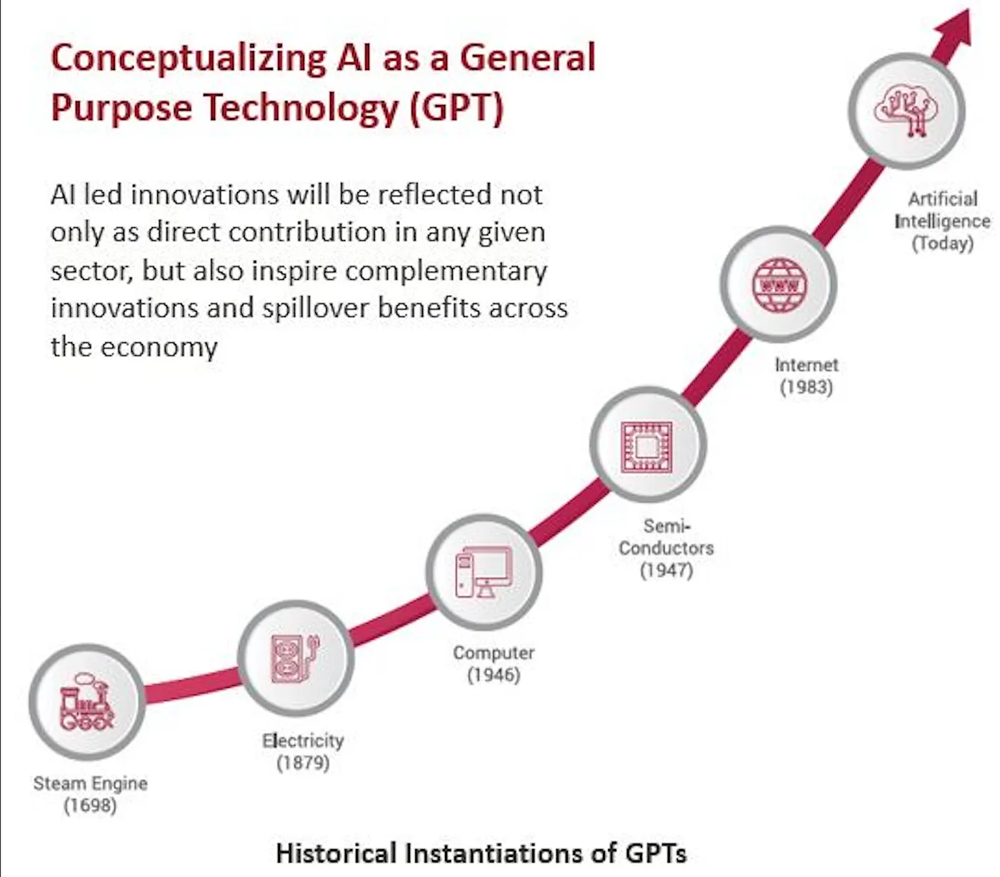

-

Medium
What Advancements Would It Take for AI Large Language Models to Become GPTs?
Exploring the technological breakthroughs and research directions needed for large language models to evolve into truly general-purpose transformers.
Thoughts on AI, machine learning, and research.

Medium
Exploring the technological breakthroughs and research directions needed for large language models to evolve into truly general-purpose transformers.